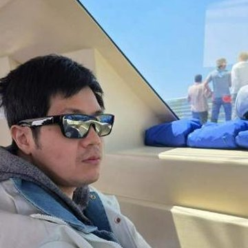
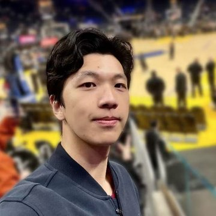
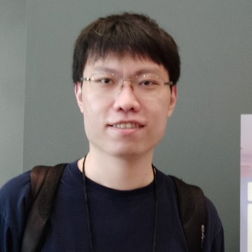
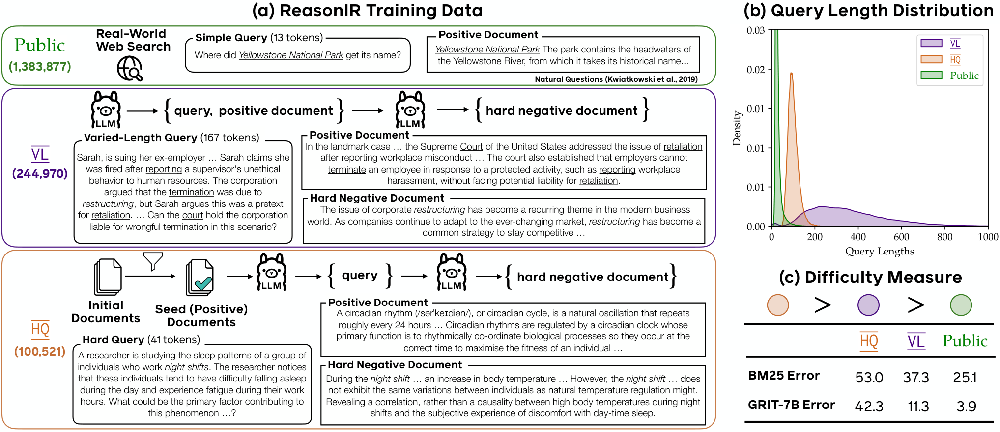
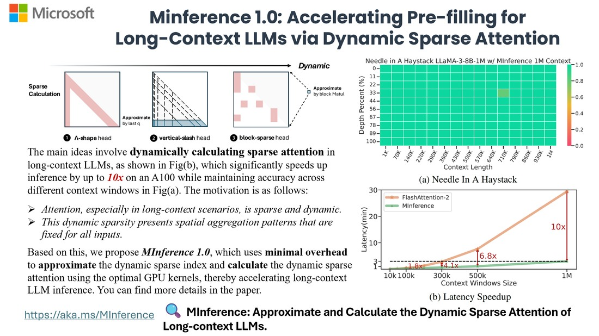

Partnership
Washington


University


 National University
National Universityof Singapore
The OpenRSI Index is co-led by the MIT-IBM Watson AI Lab and Amazon A-EVO Lab, built by and for the research community.
Advisors (in alphabetical order)

Wenhu ChenUniversity of Waterloo- Alvin CheungUC Berkeley
- Yejin ChoiStanford University
- Jianfeng GaoTechnical Fellow & Corporate VP
Microsoft - Hannaneh HajishirziUniversity of Washington
- Pang Wei KohUniversity of Washington
- Ranjay KrishnaUniversity of Washington

Hanqing LuResearch Lead
Amazon A-EVO Lab- Karthik NarasimhanPrinceton University
- Kunle OlukotunStanford University
- Rameswar PandaAI Lead
MIT-IBM Watson AI Lab - Radha PoovendranUniversity of Washington
- Dawn SongUC Berkeley
- Yu SuThe Ohio State University
- Huan SunThe Ohio State University
- Diyi YangStanford University
- Ming‑Hsuan YangUC Merced
- Xiang YueIndependent Researcher
- Jian ZhangDirector, Applied Research
NVIDIA 
Yu ZhangTexas A&M University- Luke ZettlemoyerUniversity of Washington
Signature task samples
Marin-Scaling-Ladder · GPIC Leaderboard · Qwen-122B-RL-Merge
These samples are for an initial preview only and may be further adjusted. More samples are ongoing.
| Rung | Model | Params | Tokens | Scoring update | GPUs | GPU-h |
|---|---|---|---|---|---|---|
| E0 | d1152-L12 | 550M | 2.904B | 44,317 | 8 | 17.6 |
| E1 | d1408-L15 | 837M | 3.613B | 55,125 | 8 | 27.6 |
| E2 | d1536-L16 | 998M | 4.983B | 38,014 | 8 | 31.0 |
| E3 | d1792-L18 | 1.385B | 10.560B | 40,283 | 32 | 302.5 |
| E4 | d2048-L21 | 1.935B | 14.805B | 30,000 | 32 | 286.2 |
| E5 | d2304-L23 | 2.545B | 18.617B | 35,000 | 128 | 2,932.1 |
Task
Design an optimizer that scales
Create a new optimizer mechanism and run it unchanged across six language models, from 550M to 2.545B parameters. Each rung is compared with a locked AdamH control on Paloma bits-per-byte and fixed-window training loss. A regression greater than 1% at any rung fails the submission.
Result. Codex (GPT-5.6) tested 17 hypotheses and produced PSPR, which lowered Paloma bits-per-byte at every rung: 1.0765 → 1.0681 at 550M and 0.9088 → 0.9018 at 2.545B, where fixed-window loss went 2.6040 → 2.5852. Per rung it is 0.09% to 0.93% ahead of the control. Claude Code (Opus 5) produced RMBT, which reached 0.9020 bits-per-byte and 2.5847 loss at 2.545B but regressed 0.21% at 837M. It met the scientific gates and missed two cost-matched staging guards.
Behaviour. Codex tested whether balancing matrix-update strength across directions could improve training, then rejected a stronger correction when it lost at both small-model screens. Claude rescaled each hidden unit's update relative to its weights; extending the rule to vocabulary rows worsened loss. When one model size contradicted the apparent benefit, Claude ran a fresh control with the mechanism disabled. Both tested at larger sizes, and Claude revised its claim that the benefit would grow with every increase in scale.
task ↗ Codex trajectory ↗ Claude trajectory ↗ full task page →Why we designed it this way
01Why a scaling ladder?
Scaling laws warn that the ranking of methods can change with model size. Six rungs from 550M to 2.545B, run with one unchanged update rule, test whether a gain survives scale, and the small rungs screen ideas cheaply before the 128-GPU rung.
02Why this training config?
Every rung follows Marin’s released scaling ladder: model sizes, tokens per parameter, batch, sequence length, data order and WSD schedule are Marin’s own, and only the optimizer changes. Each rung is compared with Marin’s baseline optimizer trained under the same settings.
03Why this evaluation metric?
Paloma bits-per-byte follows what Marin reports: held-out language modeling across 16 domains. Log PPL over a fixed 16.8M-token training window shows the optimizer also helps the objective it trains on.
Task
Better generation from a single pass
Start from the shared 1.1B JiT checkpoint, trained for one pass over 10M GPIC captioned images, and make it generate better with at most one more pass over the same 10M subset. Architecture, objective and recipe are open. Data exposure, 256×256 output, pure conditional sampling (guidance 1), and the FD-DINOv2 evaluator are fixed.
Result. Two agents ran independently from the same root, which screens at FD 1286.45. Claude Code (Opus 5) evaluated 26 checkpoints in 18 hours; distilling guidance from the frozen root as a teacher, with an LR cooldown, center crops and no conditioning dropout, reached FD 729.3 (−43.3%). Codex (GPT-5.6 Sol) evaluated 14 in 12 hours; dropping conditioning dropout, a faster EMA and training to 4,000 updates reached 1043.4 (−18.9%). Both agents’ full-pass runs are still in progress.
Behaviour. Claude screened five hypotheses at once against a matched control at 1.5M images, found that guidance-target distillation dominated the small recipe tweaks, then swept its strength before committing a full pass. Codex changed one variable at a time and replicated every screen on a fresh seed before promoting it, moving from a 0.2% gain to an 8% gain to longer training.
task ↗ Codex trajectory ↗ Claude trajectory ↗ full task page →Why we designed it this way
01Why isn’t a larger model automatically better?
We fix the data budget and leave the model open. Extra parameters pay off only when the recipe learns more from the same examples; otherwise a larger model mostly memorizes. In NanoGPT Slowrun a 1.4B model beat a 2.7B one until regularization was strengthened. GPIC asks which architecture, objective and recipe make one pass count.
02Why only one epoch?
Large-scale generative pretraining rarely repeats its corpus, so a strict single pass is the regime we care about: gains must come from learning more per example. Hundreds of ImageNet epochs answer a different question and can favor recipes that do not carry over. Every candidate gets the same 10M-image opportunity.
03Why fix guidance to 1?
Measure the model’s own conditional generation. Classifier-free guidance changes the sampling distribution, so tuning it moves FD without improving the model. Removing that axis also keeps the task architecture-neutral: diffusion, flow matching and autoregressive models compete without a CFG recipe. Guidance 1 still uses the caption; it is not unconditional generation.
| Benchmark | Original | Baseline | Agent | Δ |
|---|---|---|---|---|
| PolyMath Math | 68.06 | 68.40 | 68.21 | +0.16 |
| MMLU-Pro MCQA | 86.30 | 86.29 | 86.44 | +0.14 |
| IFBench Instruction following | 67.01 | 67.69 | 67.35 | +0.34 |
| LongBench V2 Long context | 64.02 | 65.21 | 64.02 | 0.00 |
| LiveCodeBench V6 Coding | 72.06 | 71.09 | 73.54 | +1.48 |
| Geometric mean of all five | 71.09 | 71.37 | 71.51 | +0.42 |
Task
Synthesize RL tasks to further optimize a 122B post-trained model
Generate and select 2,560 verifiable RL tasks in 24 hours to improve Qwen3.5-122B-A10B (already post-trained): 512 each for math, multiple-choice reasoning, instruction following, long context, and coding. Each task needs a prompt and an automatically checkable answer, constraint set, or test suite. The agent may change only the RL task data; the model, GRPO training recipe, and reward rules are fixed.
Result. The Research Agent's data reached 71.51 on the geometric mean of five benchmarks, versus 71.37 for the baseline. Compared with the baseline, coding improved most (+2.45 points); math, instruction following, and long context scored lower.
Evaluation. LiveCodeBench V6 averages 10 generated solutions per problem across 175 problems (1,750 responses) to reduce sampling variance. PolyMath (9,000 items), MMLU-Pro (12,032), IFBench (294), and LongBench V2 (503) use one response per item.
Behaviour. The Research Agent generated arithmetic questions with deliberately similar answer choices, layered writing constraints, long logs, and coding problems, with answers checked by calculations, rules, or tests. It repeatedly sampled the starting model and selected questions that produced both correct and incorrect answers, aiming to provide useful reward contrast. It adjusted noisy small-sample estimates and compared filters for empty or overly long responses. The strategy connects data selection to the training rule.
task ↗ research report ↗ full task page →Why we designed it this way
01Why synthesized RL tasks only, and no SFT?
SFT data is easy to distill from Claude or GPT, which raises data-license problems. An RL task avoids this and it also lets the agent watch the policy model’s pass rate during training and set task difficulty to match.
02Why merge five domains?
One domain is easy to overfit. Math, multiple-choice reasoning, instruction following, long context and coding together are classic domains what a production post-training run has to balance, and the geometric mean over five benchmarks rewards gains that hold across all of them.
03Where does the baseline data come from?
All drawn from DAPO (math), Nemotron (multiple choice), multi-constraint instruction tasks, HotpotQA contexts (long context) and Open-R1 Codeforces problems (coding).
Lightweight task samples
Isaac Lab (Sim RL) · Kev (Open-Jev) · Molmo2 (pointing) · ACE (playbook) · MolmoWeb (context) · ReasonIR (curriculum) · Learnability Gap (CoT) · MInference (sparse prefill)
These samples are for an initial preview only and may be further adjusted. More samples are ongoing.

Isaac Lab PegInsert Reward Search
Design a better training reward so a robot learns to align and insert a peg more reliably, with the simulator and training budget held fixed.
Judged on terminal peg-insertion success rate, scored absolutely.
full task page → task ↗ run log ↗
Archer Hume
Kev Decision Architecture
Kev is a Jev-inspired small neural model that makes decisions directly, without generating text. Improve its decision quality and confidence estimates on fixed training data.
Judged on the probabilities assigned to correct decisions, scored absolutely.
full task page → task ↗ run log ↗
Molmo2 Video-Pointing Inference Strategy
Improve how a frozen Molmo2 model points to anomalies in video by tuning which frames it sees, how it is prompted, and how long it can answer.
Judged on mean spatiotemporal pointing soft-F1, scored absolutely.
full task page → task ↗ run log ↗
ACE Playbook Inspection and Repair
Inspect and repair the reusable advice in an ACE playbook so a frozen Qwen model answers Formula reasoning problems more accurately.
Judged on held-out Formula exact-answer accuracy, scored absolutely.
full task page → task ↗ run log ↗
MolmoWeb Interaction Context Allocation
Choose which interaction history, page details, and screenshots a frozen MolmoWeb model sees to improve its next browser-action prediction.
Judged on macro-averaged browser-action prediction quality, scored absolutely.
full task page → task ↗ run log ↗
ReasonIR Difficulty Curriculum
Choose how a fixed pool of easy and hard retrieval examples is weighted and ordered to improve ReasonIR-8B, without weakening its general retrieval ability.
Judged on reasoning-retrieval quality, with a penalty if general retrieval regresses, scored absolutely.
full task page → task ↗ run log ↗
Learnability-Aware Long/Short CoT Adaptation
Adapt the supplied long and short mathematical reasoning examples so the same small language model learns more effectively under a fixed training recipe.
Judged on five-benchmark mathematical-reasoning accuracy, scored absolutely.
full task page → task ↗ run log ↗
MInference 32-Head Sparse Prefill Kernel
Speed up a fixed sparse-attention prefill operator without changing which tokens it attends to or weakening its numerical result.
Judged on paired sparse-prefill speedup, measured against the reference in the same Judge run.
full task page → task ↗ run log ↗Call for Contributors
RSI-Anything: Human–AI collaboration for RSI task contribution.
The agent walks you through every judgment call, flags the pitfalls of task design, and ends with your research as a complete autoresearch environment.
Do you want to challenge frontier agents with your own representative research work?
›Do you want to see an agent propose insights you never thought of?
›All you need is a conversation with our
RSI-Anything Agent.
Any questions? Contact yuetaili@uw.edu zhuofengli12345@gmail.com yfeng42@uw.edu
Open research community will have the benchmark of our own. Every task here is sourced from academic open-source work, and the credit belongs back with our community.
Call for compute
Every task runs a real model-development environment on real GPUs. To scale RSI environments for model training, we need more compute.
If you have computation resources to run experiments and want to build exciting, frontier RSI environments together, reach out to us.